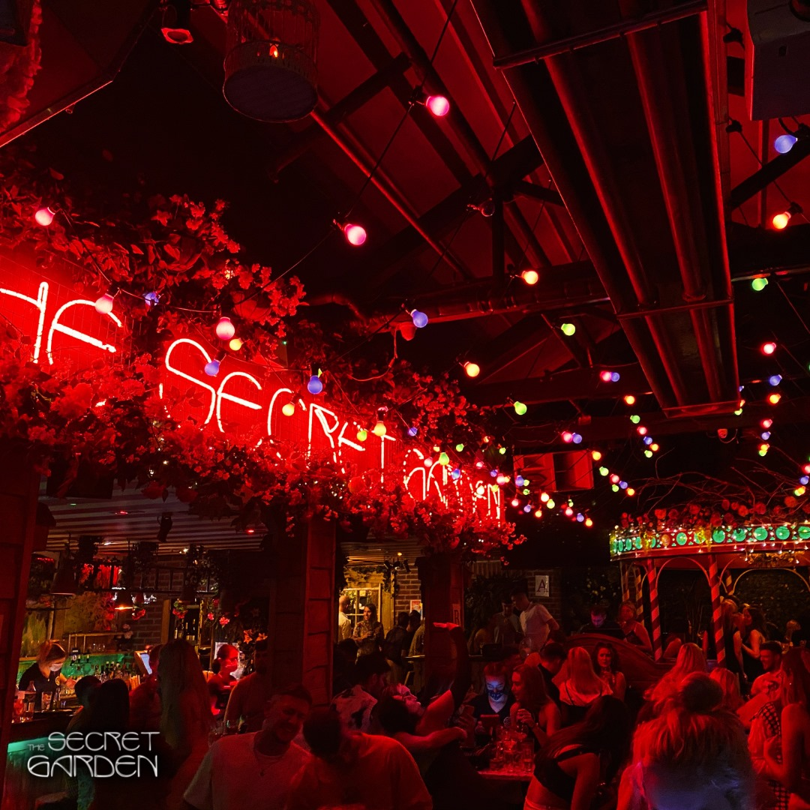

Trabolgan
Trabolgan Holiday Village in East Cork is one of Ireland's favourite family holiday destinations.Located
on 140 acres of woodland Trabolgan has 172 self catering houses with facilities that include an Indoor
Subtropical Pool, a fitness suite with Spa Bath, Sauna and Steam Room and a range of Adventure Sport
Activities including


The Secret Garden
The Secret Garden is modern oasis in Cork city. A fairy tale for grown-ups, an outdoor nightclub. The
Secret Garden is said to be a magical place that has to be seen to be believed. Think Alice in
Wonderland meets Narnia and that might give you a clue as to what to expect.

The English Market
Cork's English Market has served the people of Cork in the face of famine, flood, war and multiple
recessions. Situated in the heart of Cork City, the English Market is a roofed filled with traders
selling organic and locally produced food and has been
running since 1788
Jameson Distillery Midleton
Cork's answer to the Guiness storehouse, The Jameson Experience, Midleton, is an Irish whiskey museum and
visitor centre located in the Old Midleton Distillery in Midleton, County Cork, Ireland. Set over 15
acres, since opening as a visitor's centre in 1992, the old distillery has received approximately
100,000 guests per year
Cask
Cask is a classy Cocktail Bar located in a Victorian Building and courtyard offering seasonally inspired
cocktails, Tapas, craft beer and wine Cask was crowned Irish Bar of the Year in 2018
Glenview Gardens & Fairy Trail
Glenview Gardens is a beautiful 3 acre garden with amazing designs and fun for all the family in West
Cork, including a traditional Irish Fairy Fort and Fairies Trail. This 3 acre garden is full of
surprises with each garden style flowing into the next.
Clancy's Cork
Clancy's is an 1824 pub turned into a restaurant and bar open from breakfast, with big screens, live
music and DJs. Clancy's recently added a rooftop extention to their restaurant with great views of the
surrounding area
The Butter Museum
The Cork Butter Museum is a museum in Cork city in Ireland which documents the history of butter
production and sale in County Cork. It is housed in the former Cork Butter Market.
Havana Browns
Havana Browns is Cork's longest running nightclub. Constantly at the forefront of music and
nightlife.Havana Browns is a Glossy nightclub with 4 separate bars and an LED wall, hosting resident DJs
and big-name guests.
Cork Ghost Tour
The Cork ghost tour is a real Cork & local experience where a trip is taken through time into old Cork on
streets from the 1700’s, the tour is interactive, factual, comic with an unusual and honest slant on
Cork and it’s diverse and sometimes dark history.
Visit some beaches
Some of the best places to visit in Cork are the sandy stretches that are dotted along its magnificent
coastline, from tourist favourites, like Inchydoney Beach and Garretstown Beach, to lesser-know spots,
like Warren Beach, there’s something to tickle every fancy.